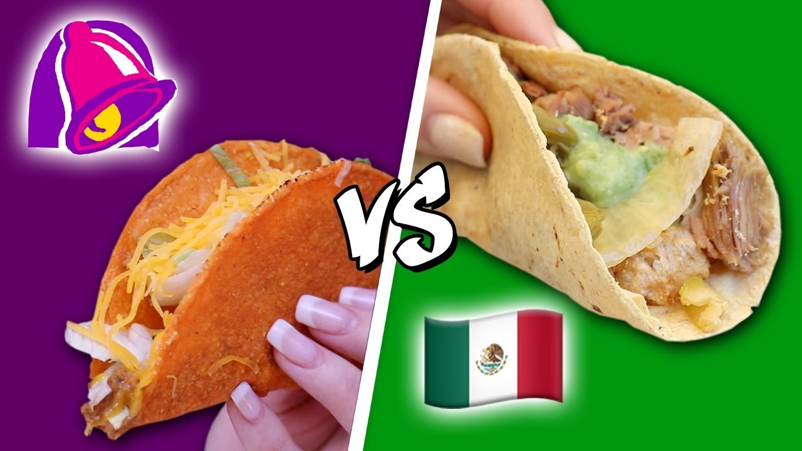

Home
What is a taco?
Ingredients
Occasion
See Also
References
Secret
Is a taco at Taco Bell a Mexican taco?
Absolutly not. Though tacos at Taco Bell do taste delicious, when I am talking about tacos, I am talking about authentic Mexican tacos which are
100x
times better than
hard shell tacos.
